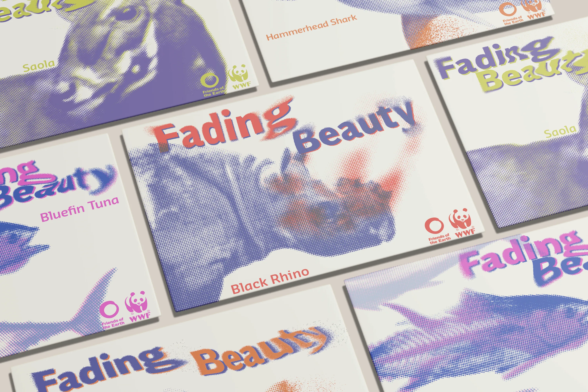
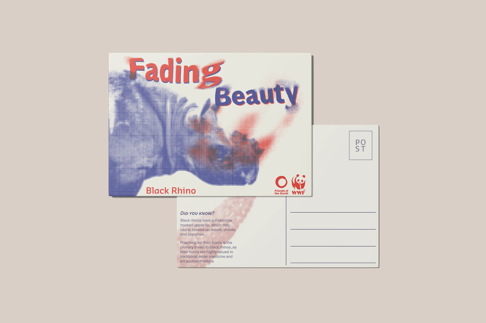
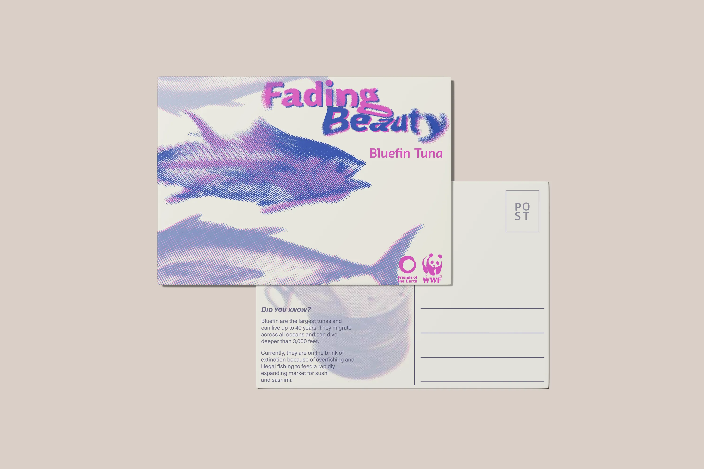
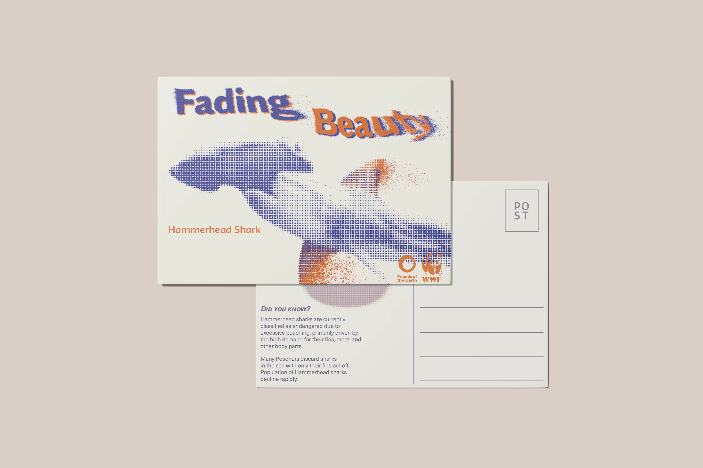
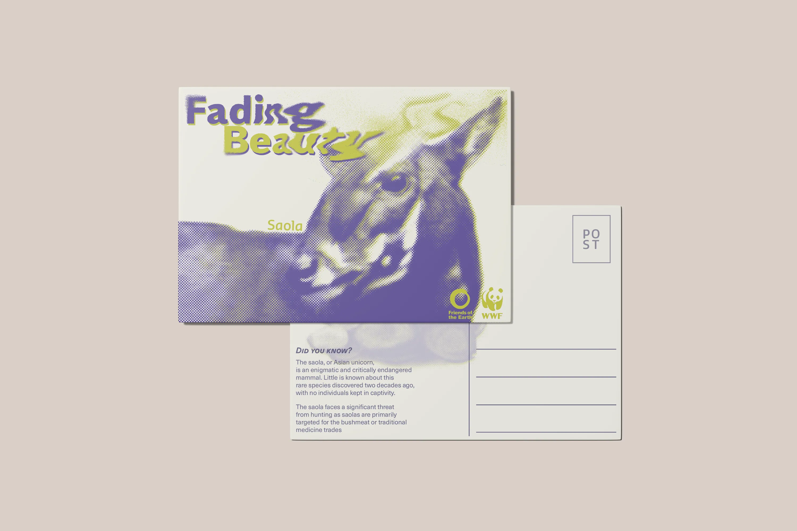
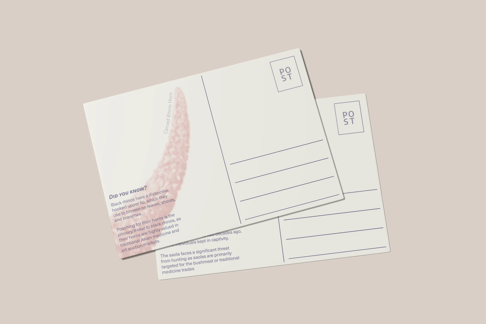
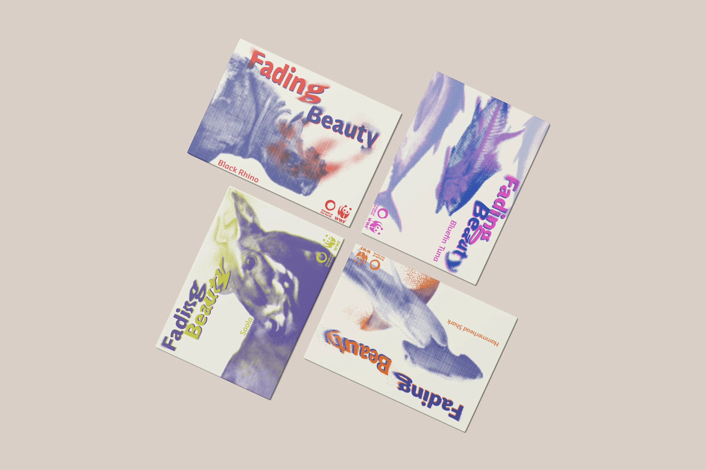

The design brief aims to create a set of postcards for WWF and Friends of the Earth. The postcards is aimed to raise awareness of endangered species using images, only two inks, and specified fonts. This is a colab project with students from Hongik Univeristiy
Our team depicted the poached parts of the animals using a halftone fading effect. This symbolizes both the reasons for their poaching and the gradual disappearance of these species due to excessive hunting.







© 2026 Fredrick Yip. All rights reserved.